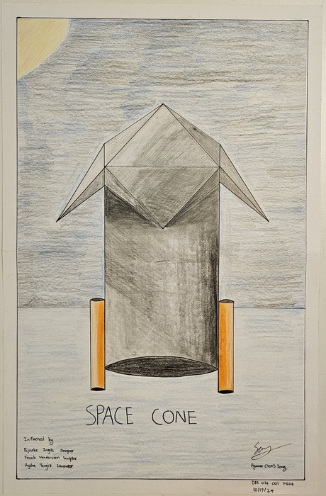
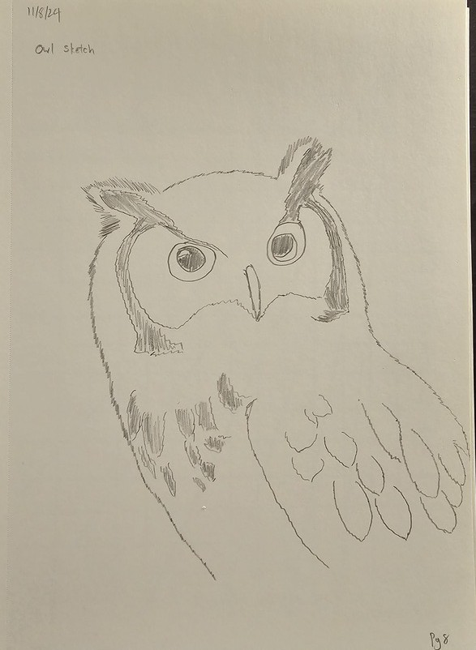
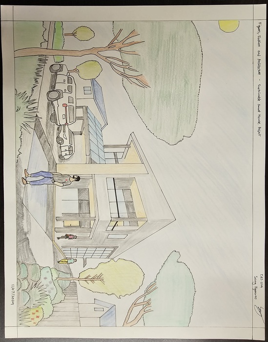
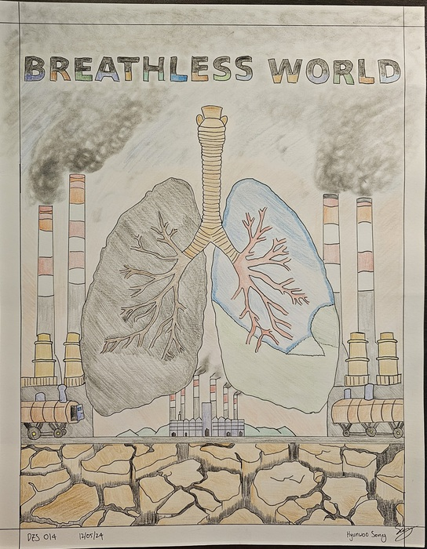

Project 1

This project was the very first project I have done for DES014, showing only basic skills of sketching.
Sketch

This was a sketch I have done in middle of quarter, showing improved skills.
Project 2

This was my second project, which really imprvoed skills of colors, shades, and line works.
Final

This is the final project, and as it shows, I have started to use smudging skills for expressing smokes.